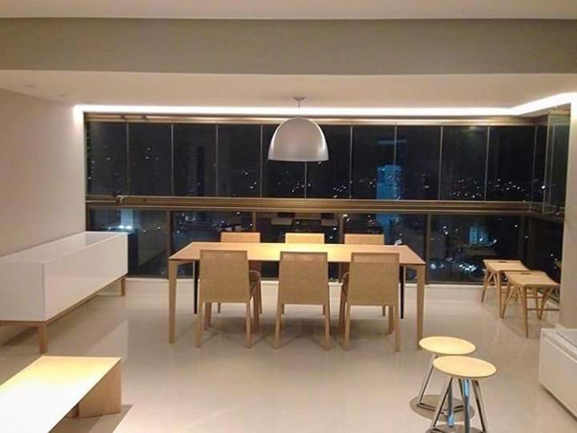

Desfrute de uma vista deslumbrante sem perfis de alumínio verticais entre as lâminas de vidro. Abertura articulada de 100%, máxima proteção contra tempestades e vedação acústica.
O sistema Balcony Brasil foi projetado para valorizar o espaço de varandas gourmet e sacadas em edifícios residenciais de qualquer altura, permitindo que as folhas de vidro deslizem individualmente em trilhos e girem em 90 graus no canto da parede.

O sistema atende rigorosamente a todos os ensaios de segurança exigidos pela ABNT:
Envie as medidas estimadas e a cidade pelo WhatsApp para receber uma prévia de valores e especificações.
Nosso especialista técnico visita seu imóvel para aferição milimétrica dos níveis e prumos da sacada.
Montagem com perfis originais Balcony, vidros certificados e equipe própria uniformizada e treinada.
Testes de estanqueidade, demonstração de uso correto e emissão do termo de garantia de até 6 anos.
Confira registros fotográficos de sacadas e varandas gourmet executadas com o sistema Balcony Brasil em Balneário Camboriú, Itapema e região:


